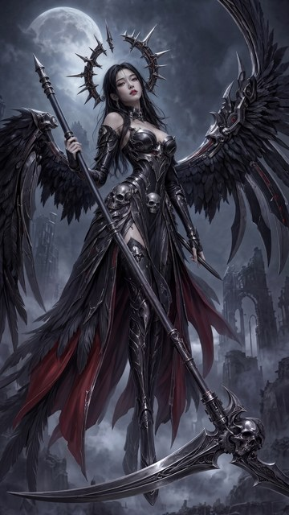
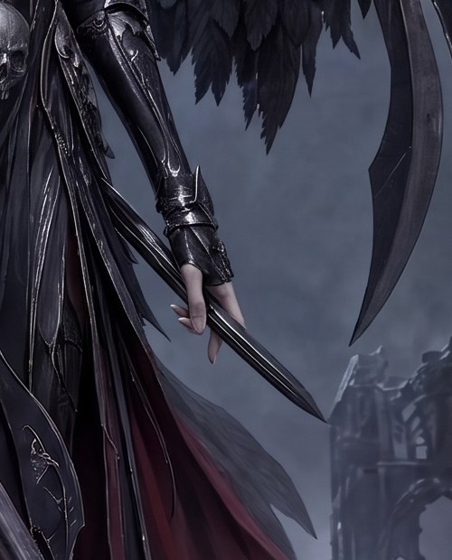
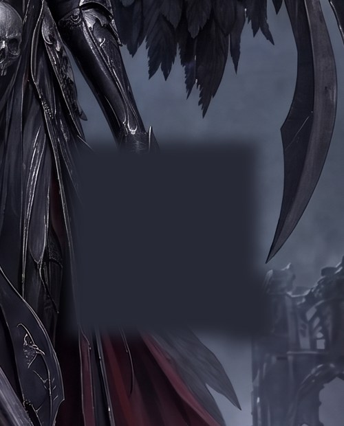
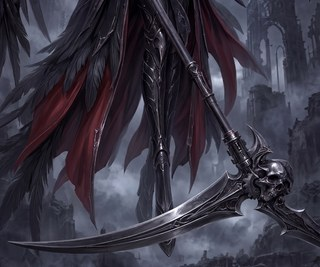
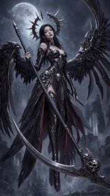

Control — untouched W2 keeper
- The exact starting point every comparison anchors to
sign-off given in-session on the published plan ("Approved"), covering the $1.00 cap, the composed crop/blank inputs, and the relaxed-empty-hand target; execution waits for Dimitri's separate start instruction
What we need from you
Sign-off on this plan and its $1.00 cap — or strike one arm (either arm is $0.23 all-in: two calls plus its screening share). Read the full ask ↓
Planned spend against the round cap$0.46 / $1.00
Remove the dagger from the W2 keeper's lower hand — the one change standing between scythe-valkyrie-r5-w2-blankboxg-comp-1 and a finished W2 wallpaper. The dagger is a leftover defect from the original r2 render: a slender blade threaded between the fingers of her free hand, attached to nothing. Jake asked for it to be gone rather than repaired, and everything else about the image is accepted, so both mechanisms in this round edit only a small crop of the hand region and are deterministically pasted back — nothing outside that rectangle can change.
Both paid arms use Gemini 3.1 Flash Image at 2K on the same deterministic crop of the keeper (rect (820,1020)-(1320,1640), the hand, dagger, vambrace and surrounding drapery/fog); every edited return is feather-composited back into the untouched keeper at that exact rectangle.
daggercomp arm, whose empty hand Jake picked) — re-run on the keeper's own canvasInput(s)r6-w2-hand-crop + r6-w2-hand prompt
Input(s)r6-w2-hand-crop-blank + r6-w2-hand-blank prompt
That is 4 paid image-generation calls — two independent two-roll Flash Batch cells — within the $1.00 cap below.
How this honours the r5 mechanism carry. R5 adopted guide-conditioned blanking (D′xg) as the first-reach mechanism, but its drawn-geometry guide steers the model toward a *target shape* — and a removal has no target geometry to draw. The applicable member of the adopted family is therefore the box blank (D′x): blanking beats prompt-only editing here for the same reason it won in r5 (a candidate that changed nothing cannot pass), while C′ earns its arm as the mechanism that already succeeded on this exact dagger in r3.
Everything that goes in, grouped by the choice it belongs to. Click any image to zoom; open a prompt to read the exact text this round spends against. Crop sets show both the cut overview and every exact output crop.
The exact starting point: r5's W2 keeper, Jake's pick ratified by Dimitri on 2026-08-21, whose one outstanding change is the dagger threaded through her lower hand.
scythe-valkyrie-r5-w2-blankboxg-comp-1
The mechanism that already removed this same dagger once (r3's daggercomp arm, whose empty hand Jake picked): a surgical removal ask on the intact hand-region crop, deterministically pasted back so nothing outside the rectangle can change.
scythe-valkyrie-r6-w2-hand-crop
projects/bluemneme/scythe-valkyrie/prompts/r6-w2-hand.txt
ATTACHED IMAGE One image is attached. IMAGE 1 is a CROP from a larger finished photorealistic artwork: a woman's bare hand emerging from an armoured vambrace, beside dark layered drapery with deep-red lining on the viewer's left; pale fog and a ruined gothic tower fill the background on the viewer's right; black feathers and dark curved metal wing-blades enter from the top and the upper right. Your task is a SURGICAL EDIT: apply ONLY the correction listed below and leave everything else untouched. EDIT — REMOVE THE BLADE A slender dagger-like blade is threaded between the fingers of the hand — it has no handle and attaches to nothing. Remove that blade completely and redraw the hand as a natural, relaxed EMPTY hand with five fingers, the palm and fingertips fully restored where the blade covered them, hanging loosely downward from the vambrace. The hand holds NOTHING — no blade, dagger, weapon, or any other object. Where the removed blade covered the drapery, fog, or ruins, continue those surfaces naturally. PRESERVATION Apart from that edit, reproduce IMAGE 1 EXACTLY: the same hand position and skin, the same vambrace and drapery, the same feathers and wing-blades, the same fog and ruins, the same lighting and colour grading, at the same framing on the same canvas shape as IMAGE 1 — do not zoom, crop further, or extend the scene. Add no new objects, no extra glow, and no text, labels, logos, or watermarks.
The r5-adopted blank-family mechanism applied to removal: the dagger and hand are painted out with shape-neutral rectangles before the model sees the crop, so the dagger cannot be reproduced from its pixels and a silent no-op is impossible.
scythe-valkyrie-r6-w2-hand-crop-blank
projects/bluemneme/scythe-valkyrie/prompts/r6-w2-hand-blank.txt
ATTACHED IMAGE One image is attached. IMAGE 1 is a CROP from a larger finished photorealistic artwork, in which one region has been deliberately PAINTED OUT with a flat dark grey-blue tone. The visible scene: an armoured vambrace on a woman's forearm reaches down from the top edge and ends at the painted-out region; dark layered drapery with deep-red lining fills the viewer's left; pale fog and a ruined gothic tower fill the background on the viewer's right; black feathers and dark curved metal wing-blades enter from the top and the upper right. RESTORE THE PAINTED-OUT REGION Fill the painted-out region so the artwork reads as always having been complete: - Her bare hand emerges from the vambrace as a natural, relaxed EMPTY five-fingered hand, hanging loosely downward beside the drapery, in the same photoreal skin rendering as the rest of the artwork. The hand holds NOTHING — no blade, dagger, weapon, or any other object appears anywhere in the restored region. - Behind and around the hand, continue the existing drapery edge, fog, and ruins naturally so the fill matches its surroundings seamlessly. PRESERVATION Everything OUTSIDE the painted-out region must be reproduced EXACTLY as shown: the same vambrace, drapery, feathers, wing-blades, fog, ruins, lighting and colour grading, at the same framing on the same canvas shape as IMAGE 1 — do not zoom, crop further, or extend the scene. Add no new objects, no extra glow, and no text, labels, logos, or watermarks.
Humans decide the art; machines establish what changed. R4's overturn lesson still binds: no machine verdict promotes a keeper, and any blind-versus- crop-audit disagreement is a mandatory human look. More broadly (Dimitri, 2026-08-22): every machine lane in this round — deterministic screens, crop audits, and the blind detector — is advisory evidence for the human eye-call, which remains the overwhelmingly predominant source of truth on image judgements. Screens without a validated fire/stay-silent record are labelled EXPERIMENTAL and gate nothing.
region_edit.py verifies from the written PNG that each composite changes zero pixels outside (820,1020)-(1320,1640). edit_diff.py records pixel/perceptual measures for every candidate against the keeper. A deterministic no-op screen (r5's W2 lesson: every Flash prompt-only arm was a no-op, and the blind lane cannot detect that) counts changed pixels (per-pixel |ΔRGB| sum > 30) inside the dagger/hand region — the union of rects (920,1225)-(1195,1510) and (1150,1420)-(1220,1520). A C′ candidate changing fewer than 5% of those pixels is recorded as that artifact's NO-OP observation in reviews.jsonl — advisory like every machine lane: it tells the reviewers that candidate is near-pixel-identical to the keeper, and the human eye-call remains free to confirm or override it. D′x fractions are reported for context only (its input was blanked, so a prompt no-op is impossible by construction). The screen classifies candidates and never aborts or disqualifies: all four candidates receive their full FAST and SLOW evaluation and all four reach the panel, so the COMPLETE panel covers the exact planned set. An EXPERIMENTAL edge-band seam diagnostic reports each composite's changed-pixel fraction in a thin band just inside the paste rectangle (past the 48 px feather) against its interior — a seam at the paste boundary would show as band change disproportionate to the edit. It is uncalibrated and gates nothing: per r5's retired-screen lesson, a deterministic screen must be shown to fire on a bad case and stay silent on a good one before it may gate, and this one has no such record yet (its numbers inform the human eye-call and can be calibrated later against r5's twenty crop composites). Both screens' numbers are recorded per candidate in reviews.jsonl (machine reviewer claude-advisory-screens, no call of its own) and — because the later crop-audit record takes the card's machine-chip slot by merge design — are also quoted in each candidate card's panel-config desc field (the key the renderer consumes as card body text), the merge-proof surface that guarantees they render. A fresh-context crop audit applies the removal contract to all 4 composites, each auditor using a per-artifact scratch directory (r5's parallel-auditor lesson). No guide-residue screen runs: r5 retired it as fundamentally flawed, and this round draws no guides. When every FAST record exists, publish the panel as PROVISIONAL — slow checks pending.blind_detect_round.py manifest covers all 4 candidates in two Batch waves against prompts/r6-review-brief.txt. Append its records, reconcile every disagreement with the crop audits, then refresh the same panel as COMPLETE. A provider-truncated INCOMPLETE record satisfies completeness but carries no verdict: it must be named in reconciliation, and a mattering artifact is re-verified with a fresh sync blind_detect.py record.No candidate is promoted, and no delivery work starts, before the COMPLETE panel has recorded human verdicts.
r6-w2-blank-evidence render on Drive marks the painted-out region on the full keeper). If you would rather paint the blank yourself, say so and the mask panel will be armed — your mask then enters the plan as a revision before sign-off (as r5 did), or as a logged amendment registering a new input after it.Four Flash 3.1 Batch edits at a conservative $0.065 each reserve $0.26 (r3's identical dagger-crop cell accounted $0.051; r4/r5 cells the same). FAST evaluation is free. SLOW evaluation reserves $0.20 ($0.05 × 4 candidates; r5 accounted ~$0.0125 each). Planned total $0.46 against the proposed $1.00 USD cap, no Meshy credits. Live wrapper preflights remain authoritative.
scythe-valkyrie-r5-w2-blankboxg-comp-1 (the W2 keeper from r5), two deterministic derived inputs built by runbooks/r6-plan-inputs.py (a hand-region context crop and its dagger-blanked variant), and two committed R6 prompt filesscythe-valkyrie-r6-w2-hand-comp-1/-2, scythe-valkyrie-r6-w2-handblank-comp-1/-2); the untouched keeper is the free controlclaude/scythe-valkyrie-r6-runbook)edit_diff reports with a deterministic dagger-region no-op screen, and a fresh-context crop audit (per-artifact scratch directories) as each candidate lands; SLOW — one two-wave Batch blind detector across all 4 candidates against the committed review briefinputs, prompts, matrix, commands (pipeline detail)
runbooks/r6-plan-inputs.py (free, local), pushed to Drive, and registered in lineage.json: scythe-valkyrie-r6-w2-hand-crop (rect (820,1020)-(1320,1640) of the keeper — mirrors the proven r3 dagger-recipe framing on the keeper's own 1536×2730 canvas) and scythe-valkyrie-r6-w2-hand-crop-blank (the same crop with the rectangle union (920,1225)-(1195,1510) ∪ (1150,1420)-(1220,1520) painted out in flat sampled tone (39,41,54), 10 px feather — covering the dagger's both tips and the whole hand below the vambrace cuff while staying clear of the intact wing-blade tip at (1205-1240,1350-1404)). The blank outline carries no dagger-shape cue (r5's anti-anchoring lesson). The r6-w2-blank-evidence render on Drive is the runbook-stage review surface. The builder is fully deterministic with no optional inputs: it has no painted-mask path (three PR #558 review findings each narrowed the rerun-provenance guard that path needed, so it was deleted under the prefer-removal-over-safeguard rule). If Dimitri wants to paint the blank himself through the private mask panel, that is a plan change handled as r5 handled it — pre-freeze, the geometry is revised (or a new explicitly named input added) in this PR; post-freeze, a logged plan amendment registers a NEW artifact id. Lineage records stay append-only either way.r3-w2-all-2 content — the same pixels the r3 recipe already edited successfully once.prompts/r6-w2-hand.txt (C′ — the r3 r3-w2-dagger.txt wording updated for this crop's content) and prompts/r6-w2-hand-blank.txt (D′x — restore wording for the painted-out region). There is no shared held-constant block this round: each prompt's scene description necessarily differs (intact crop versus painted-out crop), and that whole-file divergence is the deliberate per-arm difference named in the matrix. Both prompts state their one attached image and its role. Both describe the hand's target state identically: a natural, relaxed, empty five-fingered hand holding nothing.prompts/r6-review-brief.txt is the SLOW-lane blind-detect contract for all four full-frame composites.tools/region_edit.py and tools/edit_diff.py are unchanged (on main since PR #494). No pipeline tooling changes.| # | Source / base (input) | Model / prompt | Out stem (output) | Rolls | Divergence |
|---|---|---|---|---|---|
| 1 | r6-w2-hand-crop (one image) | flash31 · prompts/r6-w2-hand.txt | scythe-valkyrie-r6-w2-hand | 2 | surgical-removal wording on the intact crop |
| 2 | r6-w2-hand-crop-blank (one image) | flash31 · prompts/r6-w2-hand-blank.txt | scythe-valkyrie-r6-w2-handblank | 2 | restore wording on the blanked crop |
Both rows are independent grouped gemini_gen.py --rolls 2 cells submitted in parallel, so the round deliberately stays outside the gen_round.py coordinator v1 (which covers only one-roll cells). Record each printed Gemini Batch run id in its log and resume that exact caller run after interruption; never resubmit a submitted Batch.
Both rows' returns become full-frame candidates through deterministic region_edit.py paste-back into the untouched keeper at rect (820,1020)-(1320,1640), verified to change zero pixels outside it.
Generic setup: repository Python with PIL/numpy (on mog-pharau, the base checkout's ~/dev/ai-stl-pipeline/.venv), secrets via tools/_secrets.py resolution, binaries via bash tools/drive_sync.sh pull projects/bluemneme/scythe-valkyrie/generated.
The separate start PR changes current state in rounds.md, not this frozen plan. After Dimitri approves and merges the applicable PR:
python3 tools/round_start.py gate --project bluemneme/scythe-valkyrie --round r6The canonical wrapper fetches origin/main, asserts the checkout matches it, runs round_gate.py verify with the greenlight's recorded publication mode, and re-asserts exact main. Supplying its Discord composition arguments makes it print the exact start-reply and header-update commands (spend state and estimate derived from this runbook's typed Spend: line); append the start reply under the r6 header and advance the header from that completed reply's event id, in that order. Only after that Discord sequence succeeds may the paid commands below run.
set -euo pipefail
T=projects/bluemneme/scythe-valkyrie
G="$T/generated"
PY="${AI_STL_PYTHON:-python3}"
mkdir -p "$T/notes"
bash tools/drive_sync.sh pull "$G"
KEEPER="$G/scythe-valkyrie-r5-w2-blankboxg-comp-1.png"
for f in "$KEEPER" \
"$G/scythe-valkyrie-r6-w2-hand-crop.png" \
"$G/scythe-valkyrie-r6-w2-hand-crop-blank.png"; do test -f "$f"; done
for stem in r6-w2-hand r6-w2-handblank; do
if find "$G" -maxdepth 1 -type f -name "scythe-valkyrie-$stem-*" \
! -name "*-crop*" -print -quit | grep -q .; then
echo "$stem already has an output; use its cell-specific recovery path" >&2
exit 1
fi
done
PIDS=()
gen() { # gen <stem> <prompt> <image>
local stem="$1" prompt="$2" image="$3"
( set -o pipefail
"$PY" tools/gemini_gen.py --prompt-file "$T/prompts/$prompt" \
--image "$image" --out-dir "$G" --out-stem "scythe-valkyrie-$stem" \
--model gemini-3.1-flash-image --image-size 2K --rolls 2 \
--drive-sync 2>&1 | tee -a "$T/notes/$stem.log" ) &
PIDS+=("$!")
}
gen r6-w2-hand r6-w2-hand.txt "$G/scythe-valkyrie-r6-w2-hand-crop.png"
gen r6-w2-handblank r6-w2-hand-blank.txt "$G/scythe-valkyrie-r6-w2-hand-crop-blank.png"
FAIL=0
for pid in "${PIDS[@]}"; do wait "$pid" || FAIL=1; done
bash tools/drive_sync.sh push "$G"
(( FAIL == 0 )) || { echo "a cell failed — apply only its recorded recovery path" >&2; exit 1; }For a Gemini interruption, recover that cell's exact batch run: id from its log and call only gemini_gen.py --resume-run RUN_ID; never resubmit.
set -euo pipefail
T=projects/bluemneme/scythe-valkyrie
G="$T/generated"
PY="${AI_STL_PYTHON:-python3}"
KEEPER="$G/scythe-valkyrie-r5-w2-blankboxg-comp-1.png"
RECT=820,1020,1320,1640
native_roll() { # native_roll <bare-stem> <roll>
local hits=()
mapfile -t hits < <(find "$G" -maxdepth 1 -type f \
\( -name "$1-$2.png" -o -name "$1-$2.jpg" -o -name "$1-$2.jpeg" \
-o -name "$1-$2.webp" \) -print)
(( ${#hits[@]} == 1 )) || { echo "$1-$2: expected one native image, found ${#hits[@]}" >&2; return 1; }
printf '%s\n' "${hits[0]}"
}
append_composite() { # append_composite <id> <out> <raw> <prompt> <note>
PYTHONPATH=tools "$PY" - "$T/lineage.json" "$KEEPER" "$@" <<'PY'
import datetime, pathlib, sys
from genlog import append_lineage_record
lineage, base, artifact_id, out, raw, prompt, note = sys.argv[1:]
append_lineage_record(pathlib.Path(lineage), {
"id": artifact_id, "kind": "derived-composite", "files": [out],
"input_images": [raw, base], "prompt_file": prompt, "notes": note,
"generated": datetime.datetime.now().isoformat(timespec="seconds"),
}, unique_by=("id",))
PY
}
for fam in hand handblank; do
case "$fam" in
hand) PROMPT="$T/prompts/r6-w2-hand.txt" ;;
*) PROMPT="$T/prompts/r6-w2-hand-blank.txt" ;;
esac
for n in 1 2; do
raw="$(native_roll "scythe-valkyrie-r6-w2-$fam" "$n")"
out="$G/scythe-valkyrie-r6-w2-$fam-comp-$n.png"
report="$T/notes/scythe-valkyrie-r6-w2-$fam-comp-$n-locality.json"
"$PY" tools/region_edit.py composite --base "$KEEPER" --edit "$raw" \
--rect "$RECT" --out "$out" --json "$report"
test "$(jq -r .changed_outside_rect "$report")" = 0
append_composite "scythe-valkyrie-r6-w2-$fam-comp-$n" "$out" "$raw" \
"$PROMPT" \
"R6 $fam roll $n feather-composited into the untouched W2 keeper at rect ($RECT); locality verified from the written PNG."
done
done
bash tools/drive_sync.sh push "$G"
# The exact all-and-only-4 review set.
EXPECTED_IDS="$T/notes/r6-review-expected-ids.txt"
EXPECTED_TSV="$T/notes/r6-review-expected.tsv"
cat > "$EXPECTED_IDS" <<'EOF'
scythe-valkyrie-r6-w2-hand-comp-1
scythe-valkyrie-r6-w2-hand-comp-2
scythe-valkyrie-r6-w2-handblank-comp-1
scythe-valkyrie-r6-w2-handblank-comp-2
EOF
: > "$EXPECTED_TSV"
for fam in hand handblank; do for n in 1 2; do
a="scythe-valkyrie-r6-w2-$fam-comp-$n"
test -f "$G/$a.png"
printf '%s\t%s\n' "$a" "$G/$a.png" >> "$EXPECTED_TSV"
done; done
diff -u <(LC_ALL=C sort "$EXPECTED_IDS") <(cut -f1 "$EXPECTED_TSV" | LC_ALL=C sort)
# FAST: aspect + edit_diff for every candidate against the keeper.
while IFS=$'\t' read -r artifact image; do
report="$T/notes/$artifact-edit-diff.json"
"$PY" tools/edit_diff.py --base "$KEEPER" --edit "$image" \
--canvas resize-edit --region "hand=$RECT" --json "$report"
test -s "$report"
jq -e '.canvas.anisotropy <= 0.02' "$report" > /dev/null
done < "$EXPECTED_TSV"
# FAST: deterministic dagger-region no-op screen (r5's W2 lesson: a
# prompt-only Flash arm can silently change nothing, and the blind lane
# cannot detect that). Counts changed pixels inside the dagger/hand union.
# The screen CLASSIFIES and never aborts or disqualifies: a C' (hand-family)
# candidate below 5% prints NO-OP, an ADVISORY observation the humans can
# confirm or override, while D'x (handblank-family) fractions are INFO only
# (its input was blanked, so a prompt no-op is impossible by construction).
# All four candidates continue through the crop audits and the SLOW lane and
# all four reach the panel.
"$PY" - "$KEEPER" "$EXPECTED_TSV" <<'PY' | tee "$T/notes/r6-noop-screen.txt"
import sys, numpy as np
from PIL import Image
RECTS = [(920, 1225, 1195, 1510), (1150, 1420, 1220, 1520)]
base = np.asarray(Image.open(sys.argv[1]).convert('RGB')).astype(int)
mask = np.zeros(base.shape[:2], bool)
for x0, y0, x1, y1 in RECTS:
mask[y0:y1, x0:x1] = True
total = int(mask.sum())
for line in open(sys.argv[2]):
artifact, image = line.rstrip('\n').split('\t')
a = np.asarray(Image.open(image).convert('RGB')).astype(int)
changed = int(((np.abs(a - base).sum(axis=2) > 30) & mask).sum())
frac = changed / total
if '-hand-comp-' in artifact:
verdict = ('changed vs keeper' if frac >= 0.05
else 'NO-OP (advisory — human eye-call decides)')
else:
verdict = 'INFO (blanked input; fraction for context)'
print(f'{artifact}: {changed}/{total} dagger-region pixels changed '
f'({frac:.1%}) -> {verdict}')
PY
# FAST (EXPERIMENTAL, advisory-only): edge-band seam diagnostic. Reports each
# composite's changed-pixel fraction in a thin band just inside the paste
# rectangle (past region_edit's 48px feather) against its interior; a seam at
# the paste boundary shows as band change disproportionate to the edit. It is
# UNCALIBRATED and gates nothing (r5's screen lesson: fire/stay-silent
# validation before any screen may gate); the numbers inform the human
# eye-call only and are surfaced on the panel.
"$PY" - "$KEEPER" "$EXPECTED_TSV" <<'PY' | tee "$T/notes/r6-edge-band.txt"
import sys, numpy as np
from PIL import Image
RECT = (820, 1020, 1320, 1640)
FEATHER, BAND = 48, 32
base = np.asarray(Image.open(sys.argv[1]).convert('RGB')).astype(int)
x0, y0, x1, y1 = RECT
def shrink(depth):
m = np.zeros(base.shape[:2], bool)
m[y0 + depth:y1 - depth, x0 + depth:x1 - depth] = True
return m
band = shrink(FEATHER) & ~shrink(FEATHER + BAND)
interior = shrink(FEATHER + BAND)
for line in open(sys.argv[2]):
artifact, image = line.rstrip('\n').split('\t')
a = np.asarray(Image.open(image).convert('RGB')).astype(int)
changed = np.abs(a - base).sum(axis=2) > 30
bf = changed[band].mean()
inf = changed[interior].mean()
ratio = bf / inf if inf > 0 else float('inf')
print(f'{artifact}: band {bf:.1%} vs interior {inf:.1%} changed '
f'(ratio {ratio:.2f}) — advisory, uncalibrated')
PY
# Record both advisory screens per candidate, BEFORE the crop audits run.
# Reviewer id claude-advisory-screens: "claude" is a registered
# MACHINE_REVIEWER_PREFIXES entry (review_log.machine_reviewer), matching
# the r5 claude-guide-residue-screen precedent, so these chips class as
# machine diagnostics and are never attributed as a human's priorities.
# The record deliberately carries NO --call: merge_reviews folds call/
# summary/tldr later-wins, so a screen call could otherwise surface as the
# card's latest recommendation. Both screens' numbers ride in the CHIP
# text; because detector arrays keep one winner per reviewer class, the
# later crop-audit record takes the machine-chip slot on the card by
# design — the merge-proof render surface for these numbers is therefore
# the PANEL CONFIG: each candidate card's "desc" field in r6-panel.json
# (the key review_page.py renders as card body text, review_page.py:1311;
# an unknown "note" key would be silently ignored) MUST quote its no-op
# and edge-band lines from the two notes files (checked by eye against
# them at panel build). The reviewer id does not end "-crop-audit"
# and is not "blind-detect", so neither exact-set lane predicate counts
# these records.
while IFS=$'\t' read -r artifact image; do
noop_line="$(grep "^$artifact:" "$T/notes/r6-noop-screen.txt")"
edge_line="$(grep "^$artifact:" "$T/notes/r6-edge-band.txt")"
test -n "$noop_line" && test -n "$edge_line"
case "$noop_line" in
*'NO-OP'*) CHIP="warn:no-op screen (advisory): ${noop_line#*: }" ;;
*) CHIP="ok:no-op screen (advisory): ${noop_line#*: }" ;;
esac
"$PY" tools/review_log.py --file "$T/reviews.jsonl" \
--artifact "$artifact" --reviewer claude-advisory-screens \
--detector "$CHIP" \
--detector "ok:edge band (uncalibrated): ${edge_line#*: }" \
--tldr "EXPERIMENTAL advisory screens, gate nothing: ${edge_line#*: }" \
--summary "Deterministic advisory screens (uncalibrated, no fire/stay-silent record; they gate nothing and the human eye-call decides). No-op screen: ${noop_line#*: }. Edge-band seam diagnostic: ${edge_line#*: }." \
--detail "projects/bluemneme/scythe-valkyrie/notes/r6-edge-band.txt"
done < "$EXPECTED_TSV"
# FAST: the fresh-context crop auditor appends one review record per expected
# id (reviewer id ending "-crop-audit"), each using a per-artifact scratch
# directory; exact-set predicate:
fast_audits_exact() {
jq -e -s --rawfile expected "$EXPECTED_IDS" '
($expected | split("\n") | map(select(length > 0)) | sort) as $want
| ([.[] | select((.reviewer // "") | endswith("-crop-audit"))
| select((.artifact // "") | startswith("scythe-valkyrie-r6-"))
| .artifact] | unique | sort) == $want
' "$T/reviews.jsonl" > /dev/null
}
fast_audits_exact
# Publish the PROVISIONAL panel only after this predicate, all 4 locality
# reports, and every edit-diff report exist.
# SLOW: one two-wave blind manifest from the independently checked TSV.
MANIFEST="$T/notes/r6-blind-manifest.json"
jq -Rn '[inputs | split("\t") | {artifact: .[0], image: .[1]}] | {items: .}' \
< "$EXPECTED_TSV" > "$MANIFEST"
diff -u <(LC_ALL=C sort "$EXPECTED_IDS") \
<(jq -r '.items[].artifact' "$MANIFEST" | LC_ALL=C sort)
DETECT_LOG="$T/notes/r6-blind-detect.log"
DETECT_RUN=""
if [[ -f "$DETECT_LOG" ]]; then
DETECT_RUN="$(sed -n 's/^batch run: //p' "$DETECT_LOG" | head -n 1)"
fi
if [[ -n "$DETECT_RUN" ]]; then
"$PY" tools/blind_detect_round.py --resume-run "$DETECT_RUN"
else
"$PY" tools/blind_detect_round.py --manifest "$MANIFEST" \
--spec-file "$T/prompts/r6-review-brief.txt" \
--reviews "$T/reviews.jsonl" 2> >(tee "$DETECT_LOG" >&2)
DETECT_RUN="$(sed -n 's/^batch run: //p' "$DETECT_LOG" | head -n 1)"
test -n "$DETECT_RUN"
fi
# COMPLETE requires blind records from THIS run for all and only the expected
# ids; coordinator success or another run's records do not pass.
jq -e -s --arg run "$DETECT_RUN" --rawfile expected "$EXPECTED_IDS" '
($expected | split("\n") | map(select(length > 0)) | sort) as $want
| ([.[] | select(.reviewer == "blind-detect" and .batch_run_id == $run)
| .artifact] | unique | sort) == $want
' "$T/reviews.jsonl" > /dev/null
fast_audits_exact
# Surface any degraded verdict-free INCOMPLETE records — each printed artifact
# must be named in reconciliation and re-verified via sync blind_detect.py if
# it matters to the outcome.
jq -r --arg run "$DETECT_RUN" \
'select(.reviewer == "blind-detect" and .batch_run_id == $run
and (.call | startswith("INCOMPLETE"))) | .artifact' \
"$T/reviews.jsonl"Only after both exact-set postconditions pass, reconcile every SLOW/FAST disagreement and refresh the same review panel from PROVISIONAL to COMPLETE.
projects/bluemneme/scythe-valkyrie/prompts/r5-w2-blankboxg.txt
ATTACHED IMAGE One image is attached. IMAGE 1 is the bottom portion of a taller finished photorealistic wallpaper. One LARGE mostly-rectangular region spanning most of the frame's left and centre has been PAINTED OUT flat; the scythe's old blade and its root used to rise through it. Drawn GUIDE MARKINGS that are not part of the artwork show where the new blade goes — a small red circle at the blade's launch point and a cyan-and-white outline of the required blade silhouette — crossing the blank and any intact content the blade passes. Left intact: her upper leg armour and boot, the straight haft descending to the skull core of the scythe's ornate head (right), and the moonlit fog and ruins around the edges. EDIT — PAINT THE NEW BLADE ALONG THE GUIDE AND FILL THE REST Inside the blanked rectangle only: paint the scythe's new blade exactly along the drawn silhouette, launching at the red circle, forming a fresh socket on the ornate skull head, sweeping gently DOWNWARD toward the lower viewer-left and passing IN FRONT of her leg armour, her lower leg continuing naturally behind it; then fill the rest of the rectangle with what belongs there — hanging feathers and cloak at the upper left, moonlit fog and ruined arches elsewhere — matched to the surrounding lighting, colour and grain so no join is visible. Finally REMOVE every guide marking: no cyan, drawn-white or red diagram mark may remain anywhere. The old rising blade does not reappear. Do NOT paint any new wing mass, figure or object beyond the blade itself into the blank. TARGET BLADE GEOMETRY The finished scythe has exactly ONE long blade. It leaves the ornate mechanical head roughly PERPENDICULAR to the haft and carries mostly OUTWARD toward the viewer's left in one smooth, consistently curved, SHALLOW sweep of about 50 degrees of total curvature — never a hook, never a half-circle, never curling back up toward a wing. Because the haft leans steeply, the blade descends gently and its tip finishes just slightly ABOVE horizontal. Visible background separates the blade from both wings along its whole length, and from the figure everywhere except where it passes her legs. The short counter-spike ornament on the head may remain exactly as it is; it never grows into a second blade. Render the new blade in the same material, edge treatment, lighting and painterly style as the rest of the artwork. PRESERVATION Outside the blanked region, reproduce IMAGE 1 EXACTLY: the same leg armour, cloak panels, feathers, haft, ornate skull head, fog, ruins, lighting, colour, grain, framing and canvas shape. Do not zoom, crop further or extend the scene. Add no new object and no text, labels, logos or watermarks.


(no prompt recorded)
(no prompt recorded)